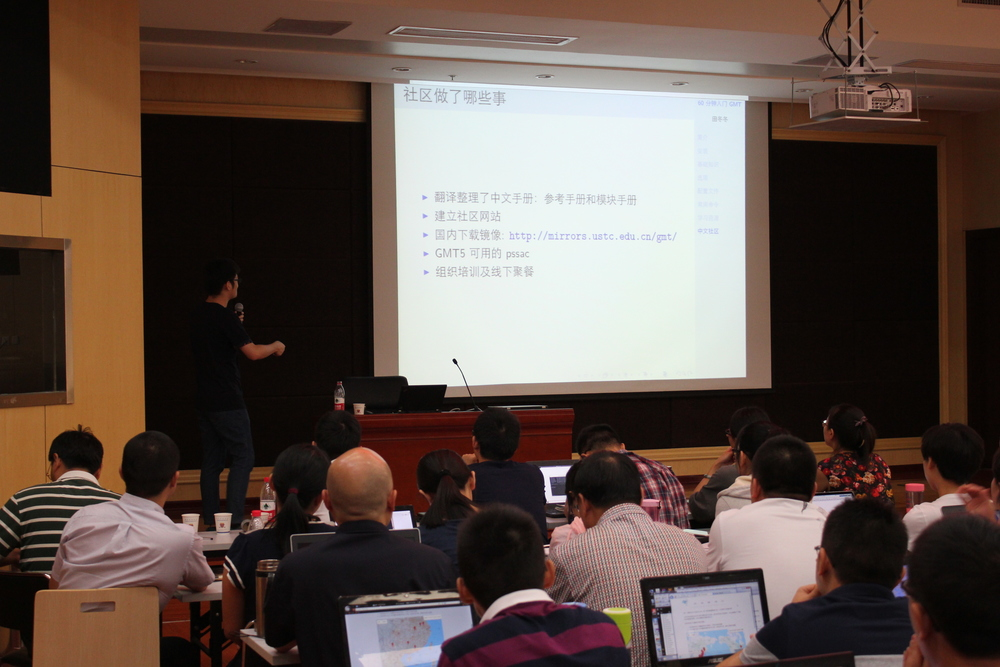
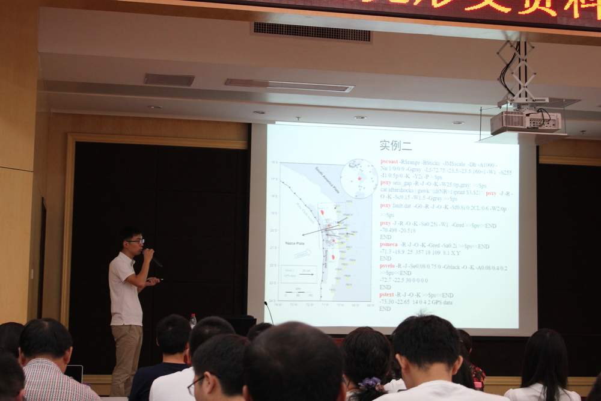
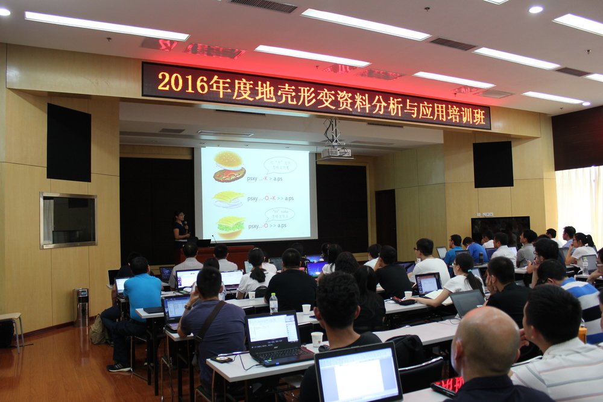

2016年9月21至22日，GMT中文社区协同中国地震局地震研究所和中国地震局地壳形变学科 技术管理组举行了首次GMT线下培训活动。
此次培训邀请了田冬冬（中国科学技术大学在读博士，社区 ID：知名不具）、 单斌（中国地质大学特任教授，社区 ID：Bins）和 刘珠妹（中国地震局地震研究所，社区 ID：忆尤）三位老师在湖北省地震局21楼报告厅 做了《GMT入门、基础及进阶》、《GMT应用与科技论文写作》、《地学常见GMT图件模板讲解》 专题培训讲座，来自全国地震系统的学员和慕名人士共计120余人参加了此次培训。
此次培训考虑到培训人员GMT操作能力差异巨大，为了尽可能地照顾到所有培训人员的需求， 经过一个月精心调研准备，从内容、思路、绘图技巧等方面综合考虑，确定了此次GMT专题 讲座的最终主题。
21日上午田冬冬博士首先介绍了GMT的概念、开发团队、GMT的版本等， 随后对GMT基础知识、配置文件、常用命令进行了详细讲解，最后总结了GMT学习方法及 学习资源，对GMT中文社区创建初衷、社区功能、未来发展等做了阐述，并呼吁各位 仁人志士加入到GMT社区的设计和日常维护中。
单斌教授对GMT做了简单介绍，随后深入浅出的介绍了GMT常用选项、常用命令、shell脚本 编写等，并对GMT在科技论文中的应用做了具体实例讲解，提供了科技论文写作技巧。 最后具神指出了GMT5和GMT4的语法命令区别，对学习兴趣、专业优势等和大家做了深入 分享交流。
22日下午刘珠妹老师对地学常见GMT图件模板进行了讲解，刘老师首先讲授了怎样读懂脚本的 使用平台、脚本版本、脚本结构等内容，然后讲授了编写绘图脚本的6个基本步骤， 介绍了自由空气异常图、布格异常图等几种常用绘图模板，讨论了中文支持、脚本批量运行、 二次开发等GMT绘图技巧，刘老师强调在学习过程中，应对照样例修改参数， 具体问题具体分析，带着问题去找答案。
此次GMT专题培训授课内容全面、专题性比较强、课程安排比较合理，通过此次培训， 推广了GMT的使用范围，提高了GMT软件在日常工作中实际操作应用能力， 促进了GMT群和GMT中文社区的未来更快更好发展，加强了GMT群成员的交流， 此次培训取得了预期效果，期待下一次培训的召开。
  